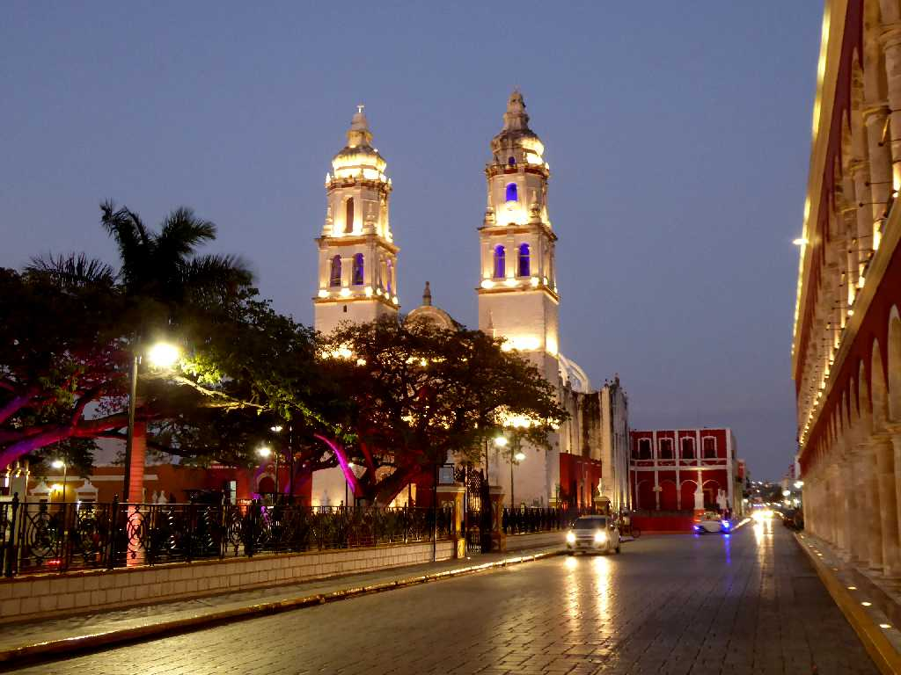
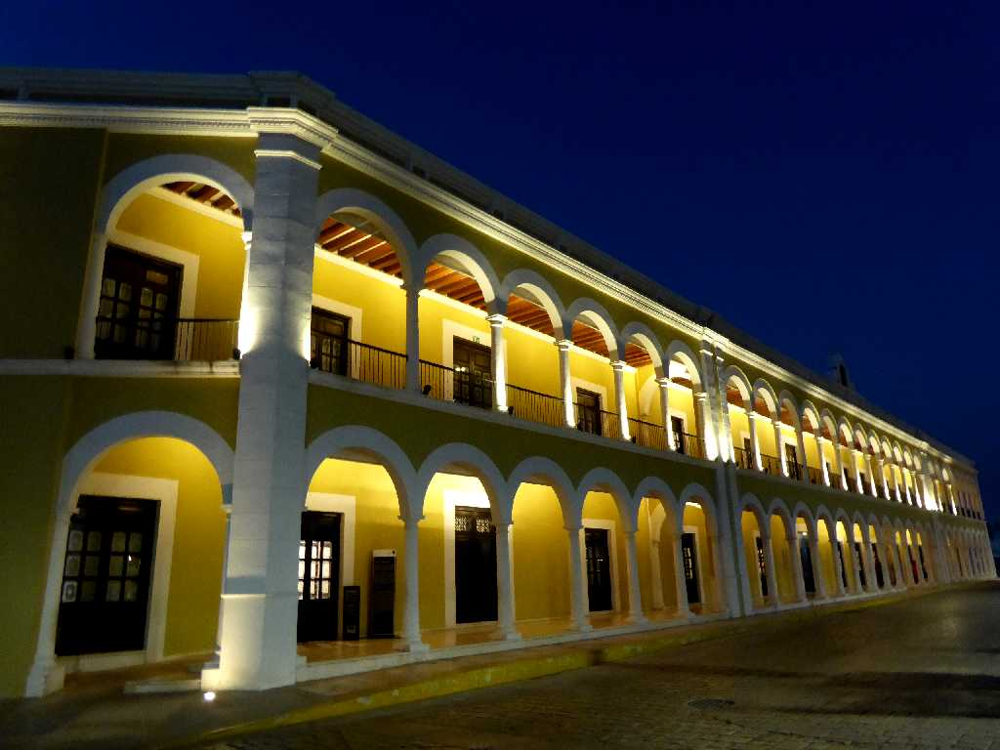
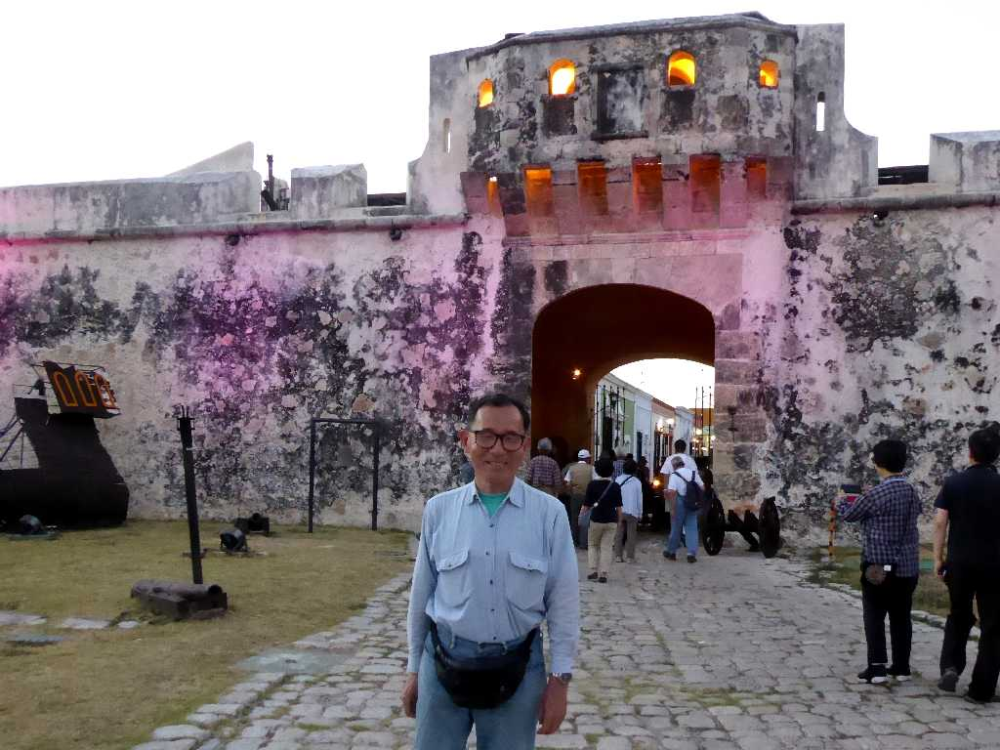

Catedral de Nuestra Señora de la Inmaculada Concepción Parque de La Independencia Campeche
１５４０年に創られた城壁に囲まれた要塞都市カンペチェ

Centro Cultural El Palacio

March 18 2020 Puerta de Tierraón Campeche
城塞都市カンペチェの南門より入城